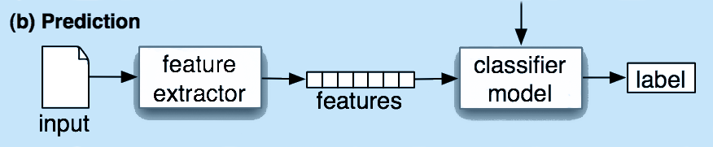
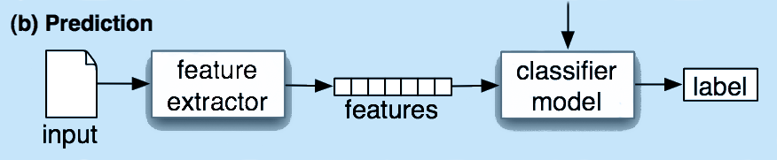
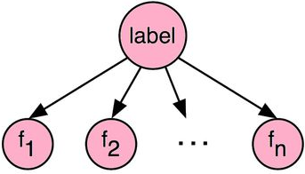
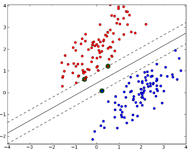
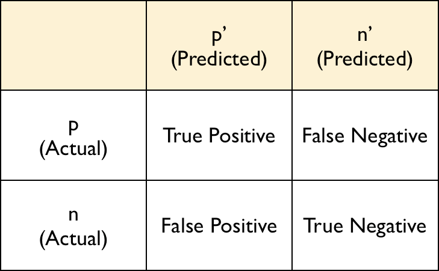

La classification
Etudiant Master 2 MIAGE - UJF
Développeur à Shopping Adventure
Le problème
- + d'appareils connectés
- + de moyens de stockage
Comment retrouver un objet?
La classification
- Système de classement
- Ranger des objets dans différentes catégories
Automatisation ????
Comment?
2 méthodes:
- Méthode déterministe
- Méthode probabilistique
Approche probabilistique
 

Modèles
Génératifs
Calcul de probabilités conditionnelles des différentes features Ex: Naïve-Bayes Discriminants
Etablir des combinaisons linéaires entre les données Ex: Séparateurs à Vaste Marge (SVM)
Lequel choisir?
- Précision
- Quantité / qualité des données
- Ressources disponibles
Evaluation du modèle
- Précision
-
Matrices de confusion
 - Cross-Validation
Quelques outils
- Natural Language Toolkit (NLTK)
- Scikit Learn